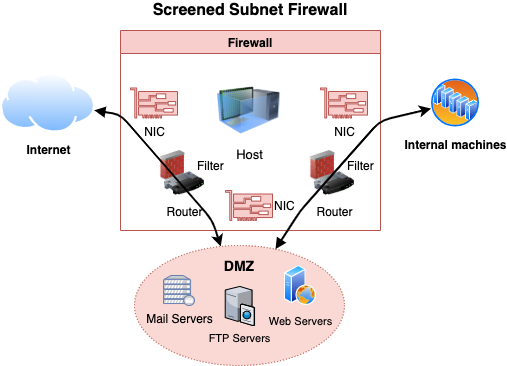
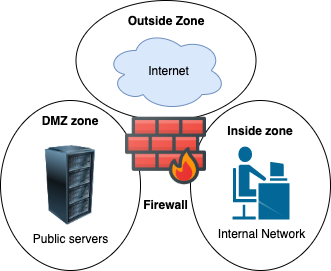

Firewall overview
- Monitors network traffic and allows or blocks traffic based on a defined set of rules
- Predefined rules ensure only allowed incoming and outgoing traffic can pass through.
- Gateway/filter between two networks usually between private and public (internet)
Firewall architecture
Multi-homed firewalls
- Also known as multi-homed hosts, multihomed hosts, multi homed hosts, multi homed firewalls or multihomed firewalls.
- 📝 A host / firewall that has more than single network interface (NIC)
- Each interface are connected to separate network segments
Dual-homed firewalls
- Dual-home can be a proxy, gateway, firewall etc.
- A special case of bastion hosts.
- Allows them to transfer data between the two networks
- Has two interfaces
- External or public, usually to untrusted network such as Internet
- Internal or private, usually to trusted network such as Intranet
- Screened Host
- Firewall architecture where two filters are used

Bastion hosts
- Mediates traffic between inside and outside networks
- Designed and configured (hardened) to withstand attacks
- Usually hosts a single service e.g. a proxy server
Screened subnet firewalls
- Screen subnet is also known as DMZ or perimeter network.
- Used to secure servers that are accessible from the internet.
- Consists of three zones:
- External (e.g. to internet)
- 📝 Demilitarized Zone (DMZ)
- Placed in-between internal (trusted) and external (untrusted) network
- Usually where bastions are placed
- Private (to internal network e.g. intranet)
- 
- Two routers
- External router separating traffic from a perimeter network (DMZ)
- Internal router separating perimeter from internal network
- Can be achieved through either
- Single firewall with three interfaces
- See also zone-based firewall
- Three different firewalls
- 💡 Better as compromising one won't compromise all
Firewall categories
- Hardware Firewall
- Device placed on the network's perimeter
- Uses packet filtering technique to filter the traffic
- Can be a standalone device or part of a router
- Software Firewall
- Filters traffic on the installed machine
- Protects its host from unauthorized access, trojans, viruses, and worms.
Software vs Hardware firewalls
| Attribute | Hardware firewall | Software firewall |
|---|---|---|
| Price | More expensive | Cheaper |
| Maintainability | Hard | Easy |
| Speed | Faster response time | Slower response times |
| Interference | Minimal, can easily remove/replace etc. | Difficult to uninstall |
Firewall types per OSI Layer
- 📝 Technologies used per OSI layer
| OSI Layer | Firewall technologies |
|---|---|
| 7. Application | • Virtual Private Network (VPN) • Application Proxies • Web Application Firewall (WAF) • Request filtering based on headers and payload |
| 6. Presentation | • Virtual Private Network (VPN) |
| 5. Session | • Virtual Private Network (VPN) • Circuit-level gateway |
| 4. Transport | • Virtual Private Network (VPN) • Packet filtering based on port numbers |
| 3. Network | • Virtual Private Network (VPN) • Network Address Translation (NAT) • Packet filtering, Stateful multilayer inspection |
| 2. Data Link | • Virtual Private Network (VPN) • Packet filtering |
- 📝 All vulnerabilities in one layer is independent of the other layer.
- E.g. cross-site scripting (application layer) vulnerable application would be vulnerable to it regardless of any protection on other layers.
- Also vulnerabilities exist at network layers would not be visible to a stateful
- 💡 In most cases, you'd use both a L3 and an L7 firewall and the two complement each other.
- See also OSI model
Packet filtering firewalls
- Implemented on the Network Layer, usually part of routers
- Designed to analyze each packet individually to apply a set of filters
- 📝 Examines the packets headers for source, destination, protocol, destination port, flags..
- Packet is dropped (not forwarded to its destination) if it does not comply with the predefined rules
- 📝 Can be stateful (mostly, newer) or stateless (older).
- Ineffective in preventing Web Application attacks as port 80 and 443 would not be blocked.
Access Control Lists (ACLs)
- Usually packet filtering rules are defined using ACLs (access control lists)
- Known also Wireless Access Control List (WACL) as in wireless routers.
- 📝 Type of rule-based access control
- 📝 E.g.
- In Linux using iptables, disable all incoming SSH using
iptables -A INPUT -p tcp --dport 22 -j DROP - In Windows it's controlled with
netsh advfirewall(older:netsh firewall) - E.g. on Cisco routers using
access-list 101 deny tcp any host 100.100.100.1 eq 22- where
101is sequence number that helps with ordering of the rules - the lower the number is the higher priority it gets in the ordering
- ACL are processed in top down meaning if a condition is met all processing is stopped.
- where
Packet inspection
Port-based classification
- E.g. TCP 80 = HTTP
- Old way, today it's useless as assumptions can be wrong
QoS markers (DSCP)
- Similar to port-based but based on QoS tags for prioritization
- Ignored as it's easy to cheat and forge
Statistical traffic classification
- Based on manual rules or ML (machine learning) dataset
- Hard to create a good dataset and poor accuracy for cases outside of the set
Deep Packet Inspection (DPI)
- Inspecting packet payload
- Encrypted payload (e.g. HTTPS) ensures privacy and confidentiality
- Can see DNS query name, HTTP Host/Server fields and SSL/QUIC SNI (Server Name Indication)
- Important for cloud applications sharing same IPs
- Used in e.g. state censorship, and cloud-generation firewalls
- Tools: ntop that's based on nDPI
Stateful firewalls
- Also known as stateful inspection firewalls
- Stateful inspection is also known as dynamic packet filtering
- Keeps state of open connections.
- When a packet arrives, its header is examined to determine if it belongs to an already established connection.
- If it belongs to a connection, then it's allowed to go through
- Analyzed against defined set of rules to determine if connection is allowed to flow through
- E.g. will filter
ACKwithout TCP connection establishment (withSYN)
Zone-based firewall
- 
- Type of stateful network and multi-homed firewalls.
- Allows setting up rules such to filter / inspect traffic between zones.
Firewall zone
- Logical area in which the devices having same trust levels resides.
- An interface is assigned to a zone.
- By default, traffic is not allowed from one zone to another.
- Common zones
- Private: inside | Most trusted network
- Public: outside | Untrusted network
- DMZ (demilitarized): neutral | Sits in-between private and outside
firewalld
- Zone-based network level firewall on Linux
- Rules can be
- Runtime: For duration of the session
- Permanent: Persists through reboot or reload of a firewall
- ❗ Requires
firewall-cmd --reloadto apply the rules.
- ❗ Requires
- Commands:
- Install:
yum install firewalld - Start:
systemctl start firewalld - Add rule (allow access):
firewall-cmd --permanent --zone=public --add-port=80/tcp - Remove rule (deny access):
firewall-cmd --permanent --zone=public --remove-port=80/tcp - Reload to apply changed rules:
firewall-cmd --reload - Block access from different countries through geo IP block
- Download ip blocks at e.g. ipdeny.com
- Download:
wget https://www.ipdeny.com/ipblocks/data/countries/all-zones.tar.gz - Extract:
tar -vxzf all-zones.tar.gz - Create a list called e.g.
blacklist:firewall-cmd --permanent --new-ipset=blacklist --type=hash:net --option-family=inet --type:hashis the storage type,:netis to block whole subnet--inet: ipv4- Add entries to list:
firewall-cmd --permanent --ipset=blacklist --add-entries-from-file=us.zone - Apply entries in list
- Deny access:
firewall-cmd --permanent --zone=drop --add-source=ipset:blacklist firewall-cmd --reload
- In
/etc/firewall/firewall.dfile you can e.g. enable logging for denied traffic. - 💡 Careful for what you log as they can grow rapidly as servers, web applications etc. are also logging.
Circuit level gateway firewalls
- Also known as circuit-level gateway
- 📝 Monitors TCP handshakes to determine if the requested connection is legitimate.
- 📝 Implemented on
- OSI model: Session Layer (5)
- TCP/IP stack: Between application (4) and transport layer (3)
- It acts as a proxy server using address translation
- Maps all of internal IP addresses to one "safe" IP address for incoming packet
- Address is associated with the firewall from which all outgoing packets originate
- Provides security as untrusted network is only aware of single IP address
Application level firewalls
- Also known as proxy firewall, application firewall or gateway firewall.
- Installed on a proxy server to act as a barrier between internal and external networks.
- Implemented on the application layer.
- 📝 Designed to filter traffic only for the protocols for which they are configured.
- Exposes single address instead of exposing internal network.
- Clients first establish a connection with a proxy firewall, and then a new network connection is initiated on the client's behalf.
- Utilizes NAT (Network address translation) to make the translations
- Can function in two modes:
- Active application-level firewalls: Actively reject or deny requests
- Passive application-level firewalls: More like IDS, does not filter
Web Application Firewall (WAF)
- Type of an application firewall that filters, monitors, and blocks HTTP traffic to and from a web service.
- 📝 It can prevent attacks exploiting a web application's known vulnerabilities
- E.g. injection, cross-site scripting (XSS), file inclusion, and improper system configuration.
Application level vs Network level Firewalls
| Capability | Application level | Network level |
|---|---|---|
| Configuration | Advanced | Narrow (IPS and ports) |
| Coverage | Small (protocol-specific) | Wider (any IP-based) |
| Speed | Slower | Faster |
| Application threats | Greater security | Blind |
- 💡 Use multiple layers of defense in depth
- Level 3 firewall at the edge that only allows inbound traffic on the specific ports used by apps
- Route those ports to an L7 firewall for deeper inspection.
Stateful multilayer inspection firewall
- Combination of different firewalls:
- packet filtering (network layer): to filter packets
- circuit level (session layer): to verify legitimate sessions
- application level (application layer): to evaluate packets
- A type of hybrid firewall as it's a mix of some of the firewalls already
Network Address Translation (NAT)
- Implemented by many firewalls just like routers
- Enables LAN to use different sets of IP addresses for external and internal traffic.
- NAT modifies the packet's IP header and translates one address space into another
- NAT allows to hide the layout of the internal network.
- Basic NAT
- One-to-one mapping where each internal IP is mapped to a unique public IP.
- Too expensive to implement
- Port address translation (PAT)
- Also known as network address and port translation (NAPT), IP masquerading, NAT overload and many-to-one NAT.
- Allows multiple internal IP addresses to be mapped to single public IP
- Uses different port (and other items) for each web conversation.
- Typically used as is the cheaper option.
- Dynamic vs Static NAT
- Static NAT: one-to-one internal to public static IP address mapping
- Dynamic NAT: uses a group of available public IP addresses.